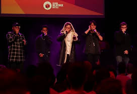
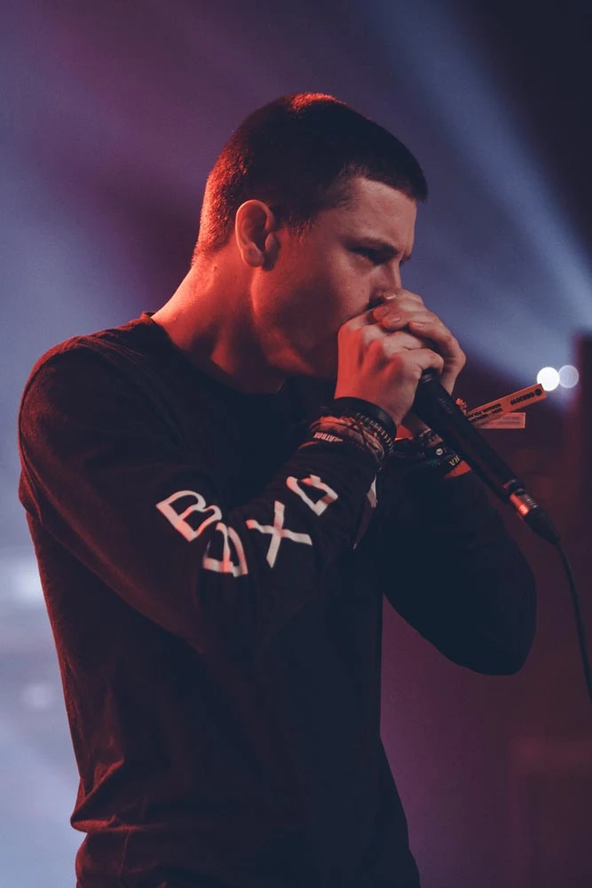

When and How I Started

I first saw beatboxing when I was around 9-10 years old on youtube and got hooked on it ever since. I thought it was the coolest thing ever when I saw it. I was watching 2 beatboxers have like a really cool beabtox battles. I really wanted to learn it because I was completely astounded by how good beatboxers were and I wanted to impress others.
As a little kid I wasn't really busy after school so I had a lot of ambition and time. I was really bad at first like everyone starts off, but I searched a lot of youtube videos on tutorials to make different sounds. They came really easy to me and my friends at school thought it was the coolest thing ever. I just kept practicing and practicing, and now I have been beatboxing for around 10 years.
Pros

The more I watched how pros beatboxed, the more I saw just how much they practiced. These people I looked up to had been beatboxing for over a decade and, although that does sound demotivation, it actually made me want to keep going. The big competition that happens every year, is the Grand Beabtox Battle. They have this tournament with judges where they compete in a single elimnation bracket and win money and a trophy. Even though it sounds easy, these beatboxers come from all over the world.
I've been watching beabtoxing pros for a very long time and have gotten to recognize them. Althoguh I haven't met any, I do know who I would most likely want to meet. I actually almost went to this event called SwissBeatBox camp where they teach amateurs on how they can improve, but it was in Switzerland so I couldn't go. My favorite beatboxers are probably:
- Napom
- D-Low
- CodFish
- Azel
- Heartzel
- Marcus Perez
Where I Hope To Take It
So far I have performed a lot of the time, even though I get really nervous and scared. The first time I ever performed was in elementary school, but I had do it with my back turned. Then I didn't perform until the last day of highschool. I find everyone's reaction really funny. I also performed for the faculty and teachers of my entire school district which was really nerve racking.
I really want to learn the Poh Snare which is the kick that sounds like a laser. I've been trying to learn this sound for years, and I think I'm finally getting close. I also want to learn how to do a better inward bass because my outward bass is really good. The inward bass gets really hard because I get easily dizzy and can't just keep trying to actually get the sound. It's probably the sound I want to learn the most though.